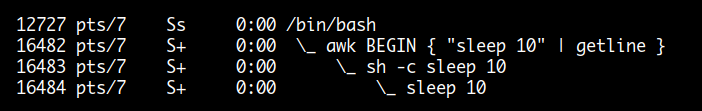
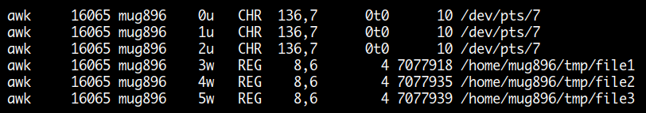
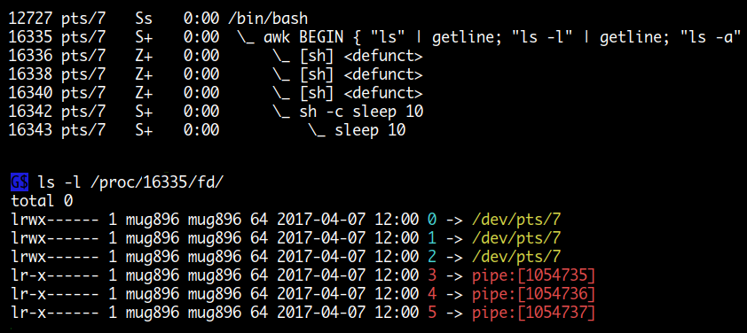
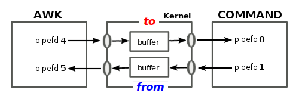

getline
Awk 의 장점 중에 하나가 입, 출력 하는 방법이 간단하다는 것입니다. 프로그래밍 언어에서처럼 open 함수를 사용하고 할 필요 없이 redirection 과 getline 만을 이용해서 간단히 처리할 수가 있습니다. 이 방법은 shell 에서 사용하는 방법과 비슷하므로 기존에 shell 에 대한 지식이 있으면 어렵지 않게 바로 사용할 수가 있습니다.
awk 에서 파일을 읽어들일 때는 꼭 명령 라인에서 인수로 전달한 파일만 사용할 수 있는 것은 아닙니다. 메인 입력 스트림과 별개로 시스템 내 어떤 파일이라도 코드 내에서 단독으로 입,출력할 수 있습니다.
그리고 이름이 getline 이라고 해서 입력을 라인 단위로 하지 않습니다. awk 는 항상 레코드 단위입니다. 명령 사이클에 의해 메인 입력 스트림으로부터 읽어 들이던 redirection 을 이용해 직접 읽어들이던 상관 없이 항상 RS, FS 가 적용됩니다. ( getline var 형식은 FS 적용에서 제외. )
pipe 나 coprocess 도 모두 redirection 에 포함되는 개념입니다.
read from main input stream
| Variant | Effect |
|---|---|
| getline | Sets $0, NF, $1, $2 ..., FNR, NR, and RT |
| getline var | Sets var, FNR, NR, and RT |
getline 문에 아무런 redirection 기호가 사용되지 않으면 디폴트는 메인 입력 스트림에서 레코드를 읽어 들입니다. awk 가 명령 사이클을 시작할 때 기본적으로 읽어들이는 스트림입니다. 위 테이블에서 오른쪽에 나열된 변수들이 getline 명령이 실행됐을 때 설정되는 변수들입니다.
getline 명령을 단독으로 사용하면 읽어들인 레코드를 $0 변수에 대입합니다.
$0 변수에 대입 연산이 일어나므로 NF 값과 필드 변수값들이( $1, $2, $3... ) 재설정 되고
레코드를 새로 읽어 들였으므로 NR, FNR 값이 변경됩니다.
마지막으로 레코드를 읽어 들일 때 RS 값에 의해 매칭 된 구분자가 RT 변수에 설정됩니다.
getline 명령에 var 변수를 사용하게 되면 읽어들인 레코드 값이 $0 변수에 대입되지 않고
var 변수에 대입됩니다.
따라서 이때는 $0, NF 와 필드 변수들은 변경되지 않고 기존의 값을 그대로 유지합니다.
read file
| Variant | Effect |
|---|---|
| getline < "file" | Sets $0, NF, $1, $2 ... and RT |
| getline var < "file" | Sets var and RT |
이것은 메인 입력 스트림으로부터 레코드를 읽어들이는 것이 아니라 redirection 기호를 이용해서
지정한 파일로부터 레코드를 읽어들이는 것입니다.
NR, FNR 값은 메인 입력 스트림에서 읽어들일 때만 변경되므로 Effect 컬럼에서 제외되었습니다.
getline 명령에 변수를 사용하지 않으면 읽어들인 레코드 값이 $0 에 대입되고 NF 와 필드 변수값들이
설정 됩니다.
getline 명령에 var 변수를 사용하게 되면 var 변수와 RT 변수값만 변경됩니다.
$ cat file1
num x:
num y:
num z:
$ cat file2
111 222 333
444 555 666
777 888 999
$ awk 'BEGIN { while (getline $1 < "file1" && getline $2 < "file2") print }'
num x: 111 222 333
num y: 444 555 666
num z: 777 888 999
$ awk '{ getline $(NF+1) < "file2"; print }' file1
num x: 111 222 333
num y: 444 555 666
num z: 777 888 999
$ awk 'BEGIN {
while (1) {
if ( ! getline < "file1" ) exit
v1 = $2
if ( ! getline < "file2" ) exit
v2 = $3
print v1 " " v2
}
}'
x: 333
y: 666
z: 999
pipe
| Variant | Effect |
|---|---|
| "command" | getline | Sets $0, NF, $1, $2 ... and RT |
| "command" | getline var | Sets var and RT |
외부 명령이 실행될 때는 sh -c 형태로 실행되므로
기존에 shell 에서 명령을 작성할때 처럼 파이프를 이용해 여러 명령을
연결할 수도 있고 redirection 을 사용할 수도 있습니다.
"command" 실행 결과는 shell 에서처럼 stdout 출력이 파이프를 통해 getline 에 전달됩니다.

$ awk '
BEGIN {
if ( "pidof chrome | xargs -n1 | wc -l" | getline count )
print "total chrome pids : " count
}'
45
-----------------------------------------------
$ awk 'BEGIN {
while ( "sort /proc/modules" | getline > 0 )
print $1
}'
-----------------------------------------------
$ echo "333 111 444 222" |
awk '{
for (i=1; i<=NF; i++)
print $i | "sort > file"
}'
$ cat file
111
222
333
444
coprocess (|&)
| Variant | Effect |
|---|---|
| "command" |& getline | Sets $0, NF, $1, $2 ... and RT |
| "command" |& getline var | Sets var and RT |
파이프를 이용하면 외부 명령의 실행 결과를 getline 으로 받을 수도 있고 또한 프린트 문을 이용해 데이터를 외부 명령에 전달할 수도 있는데요. 하지만 이것은 데이터가 단 방향으로 만 전달되는 것입니다. 이 두 가지 기능을 합쳐서 외부 명령에 데이터를 전달하고, 다시 외부 명령의 실행 결과를 getline 으로 받을 수 있는 것이 coprocess 입니다. coprocess 는 외부 명령과 양방향 통신이 필요할 때 사용할 수 있는 기능입니다.
# 프린트문으로 외부 명령에 데이터를 전달하고 실행 결과를 getline 으로 받을 수 있습니다.
print "SELECT id, name, price ..." |& "db_server"
"db_server" |& getline
# 파이프는 단방향 통신으로 date 명령이 /bin/sh 에 전달되어 실행 결과가 stdout 으로 출력
$ awk 'BEGIN {
print "date" | "/bin/sh"
}'
Fri Jun 30 18:22:10 KST 2017
# 다음과 같이 하면 date 명령의 실행 결과가 stdout 으로 출력되지 않고 getline 으로 받을 수 있다.
$ awk 'BEGIN {
print "date" |& "/bin/sh"
"/bin/sh" |& getline v
print v
}'
Fri Jun 30 18:51:42 KST 2017
shell 에서처럼 두 개의 외부 명령을 직접 연결해 사용할 수 없습니다. 항상 중간에 awk 를 거쳐야 합니다.
# Wrong !!
"ls -1" | "wc -l"
# Wrong !!
"ls -1" |& "wc -l"
# OK
$ awk 'BEGIN {
while ("ls -1" | getline v) print v |& "wc -l"
close("wc -l", "to")
"wc -l" |& getline v
print v
}'
6
getline 명령과 종료 상태 값
getline 명령은 새로운 레코드를 읽어들이는 것이 성공했을 경우 1 이 반환되고
그렇지 않을 경우는 0 이 반환됩니다 ( End Of File ).
그 외에 파일이 존재하지 않거나, 읽을 권한이 없거나 하는 경우는 -1 이 반환됩니다.
0 이외의 값은 참이 되므로 만약에 첫 번째와 같이 작성할 경우
파일이 존재하지 않는다면 무한 루프에 빠지게 되겠죠.
따라서 두 번째와 같이 체크해야 합니다.
1. while ( getline < "file.txt" ) ...
2. while ( (getline < "file.txt") > 0 ) ...
# 반환값을 체크할 때 ( ) 는 생략할 수 있습니다.
3. while ( getline < "file.txt" > 0 ) ...
또한 레코드 읽기에 실패하여 0 이 반환될 경우는
이전 $0 값이 변경되지 않고 그대로 남아있게 되므로
성공 여부를 체크해야 합니다.
$ cat file.txt
1,2,3,4,5,6,7,8,9 # 2 개의 레코드
a,b,c,d,e,f,g,h,i
# 세 번째 getline 부터 사실상 레코드 읽기가 실패하여 이전 $0 값이 프린트된다.
$ awk 'BEGIN{ for ( i=0; i<5; i++ ) { getline < "file.txt"; print } }'
1,2,3,4,5,6,7,8,9
a,b,c,d,e,f,g,h,i
a,b,c,d,e,f,g,h,i
a,b,c,d,e,f,g,h,i
a,b,c,d,e,f,g,h,i
# 따라서 다음과 같이 반환값을 체크해서 사용해야 합니다.
$ awk 'BEGIN{ for ( i=0; i<5; i++ ) { if (getline < "file.txt") print } }'
1,2,3,4,5,6,7,8,9
a,b,c,d,e,f,g,h,i
getline 이 파이프와 함께 사용될 경우는 명령의 존재 여부나 성공에 상관없이
출력값의 유, 무에 따라 1 또는 0 이 반환되므로 다음과 같이 체크하면 됩니다.
while ( command... | getline ) ....
명령 실행 결과 아무런 출력이 발생하지 않았다는 것은
명령이 정상적으로 실행되지 않은 것으로 판단할 수 있습니다.
이것은 외부 명령의 종료 상태 값과는 관계가 없는 것으로
단지 stdout 출력의 유, 무를 가지고 판단하는 것입니다.
$ awk 'BEGIN {
cmd = "stat -c %s foobar" # foobar 는 존재하지 않는 파일
if ( cmd | getline var )
print "OK: " var
else
print "Error: " cmd
}'
stat: cannot stat 'foobar': No such file or directory # stat 명령의 stderr 출력 메시지
Error: stat -c %s foobar
# 다음과 같은 경우 stat 명령이 오류로 종료하였지만 2>&1 를 이용해
# stderr 출력을 stdout 로 redirect 하여 getline 명령에서 OK 가 출력됩니다.
$ awk 'BEGIN {
cmd = "stat -c %s foobar 2>&1"
if ( cmd | getline var )
print "OK: " var
else
print "Error: " cmd
}'
OK: stat: cannot stat 'foobar': No such file or directory
Socket 이나 READ_TIMEOUT 기능을 사용할 때는 -1 이 반환될 수 있습니다.-1 이 반환될 때는 ERRNO 변수값도 함께 설정됩니다.
$ awk 'BEGIN {
service = "/inet/tcp/0/0.0.0.0/daytime"
print ( getline < service )
print "ERRNO: " ERRNO
}'
-1
ERRNO: Address family not supported by protocol
$ awk 'BEGIN {
PROCINFO["/dev/stdin", "READ_TIMEOUT"] = 2000 # 2 초
print ( getline var < "/dev/stdin" )
print "ERRNO: " ERRNO
}'
-1
ERRNO: Connection timed out
close 함수
redirection 에 의해 open 된 파일, 명령 리소스는 awk 명령이 실행을 종료하게 되면 자동으로 반환됩니다. 하지만 명령 실행중에는 한번 open 되면 종료될 때까지 open 상태를 유지하므로 경우에 따라서 close 함수를 이용해 관리를 해주어야 합니다. close 함수는 리소스를 반환하는 역할 외에도 파일 포지션과 파이프에 연결된 외부 명령 실행을 컨트롤할 수 있는 기능이 있습니다.
앞서 읽어들인 파일을 처음부터 다시 읽어들여야 할 때
파일이나 파이프로부터 레코드를 읽어들이는 중에 다시 처음부터 읽어들여야 할 때파이프로 연결된 외부 명령이 바로 실행되어야 할 때
coprocess 로 연결된 외부 명령의 실행이 정상적으로 진행되고 종료되어야 할 때
print,
>,>>를 이용해 출력한 내용이 실제 파일에 쓰기 완료되어야 할 때
다음 함수는 아무 문제가 없어 보이는데요. 실제 두 가지 문제를 가지고 있습니다.
첫 번째는 매번 함수가 실행될 때마다 파일명이 바뀌기 때문에 새로운 명령 리소스가 계속해서 생성되는 것이고
두 번째는 만약에 이전에 한번 체크에 사용했던 파일명이 다시 사용될 경우
값이 출력되지 않는다는 점입니다.
왜냐하면 처음 파일이 사용될 때 파이프가 오픈된 상태라서
명령 실행 결과를 나타내는 파일 포지션이 다음 라인을 가리키고 있기 때문입니다.
file 외부 명령은 실행 결과로 하나의 라인만 출력하므로 다음 라인을 읽을 경우
아무 값도 나타나지 않겠죠.
따라서 다음과 같은 경우는 반드시 close 함수를 사용해야 합니다.
function getFileType(file, cmd, type) {
cmd = "file -b --mime-type " file
cmd | getline type
return type
}
# 다음과 같이 반드시 close 해야 합니다.
cmd = "file -b --mime-type " file
cmd | getline type
close(cmd)
return type
다음은 외부 명령 실행 시점에 대한 내용입니다.
# awk 명령이 종료될 때까지 mail 명령이 실행되지 않습니다.
# 따라서 print $0 에 의해 전달되는 모든 레코드가 하나의 메일 메시지가 됩니다.
print $0 | "mail -s bug-report foo@abc.com"
# 다음과 같이 close 하면 바로 mail 명령이 실행되어 레코드 단위로 mail 을 보낼 수 있습니다.
cmd = "mail -s bug-report foo@abc.com"
print $0 | cmd
close(cmd)
open 해서 사용할 수 있는 파일이나 명령은 제한이 있는 리소스
특정 프로세스에서 오픈할 수 있는 파일 개수나, 실행할 수 있는 child 프로세스는 무한정 가능한 것이 아니고 제한이 있는 리소스입니다. 보통 스크립트 실행 중에 사용하는 파일이나 명령은 몇 개 되지 않으므로 굳이 코드상에서 직접 close 할 필요는 없겠으나 그렇지 않고 전체 레코드를 처리하는 과정에서 지속적으로 새로운 리소스가 생성된다면 먼저 사용 완료한 리소스를 close 해야 합니다.
다음은 아래의 명령을 실행한 후에 다른 터미널에서 lsof -p 16065 명령으로 조회한 결과인데요.
파일을 open 하여 쓰기를 한 후에 close 하지 않아서 FD 3w, 4w, 5w 번이 사용 중인 상태로 남아있습니다.
$ awk 'BEGIN { print PROCINFO["pid"]
print 111 > "file1"
print 222 > "file2"
print 333 > "file3"
system("sleep 10")
}'
16065

다음은 아래 명령을 실행한 후에 다른 터미널에서 ps f 명령으로 조회한 결과입니다.
파이프를 이용해 외부 명령을 child 프로세스로 실행시킨 후에 close 하지 않아서
프로세스들이 좀비 상태로 남아 있고 FD 들 또한 사용 중인 상태로 남아있습니다.
$ awk 'BEGIN {
"ls" | getline;
"ls -l" | getline;
"ls -a" | getline;
system("sleep 10")
}'

close 하는 방법
open 한 리소스를 close 하는 방법은 단순히 open 할 때 사용한 파일명이나 명령 스트링을 동일하게 close 함수에 사용하면 됩니다. 이때 한가지 주의해야 될 점은 awk 는 리소스 구분을 문자 그대로 스트링 값만을 가지고 하기 때문에 open 할 때 사용한 스트링 값과 close 할 때 사용한 스트링 값이 공백 하나라도 틀리면 다른 리소스로 인식을 합니다. 따라서 리소스 스트링 값이 길어질 경우 변수에 대입해서 사용하는 것이 좋습니다.
아래와 같이 cmd 명령 스트링이 매 레코드 입력 시마다 변경되는 경우 새로운 리소스가 계속해서 생성되므로 사용 후에는 반드시 close 해야 합니다.
...
cmd = "grep " $1 " /some/file | myprog -q " $3
while (cmd | getline) {
process output of cmd
}
close(cmd)
coprocess 에서 close 할 때 "to" 인수의 사용
coprocess 의 경우는 awk 프로세스와 외부 명령 프로세스가 양방향 통신을 위해 두 개의 pipe 를 이용해 연결되는 형태입니다. 이때는 한쪽 프로세스가 작업을 마치고 close 하지 않으면 이후 나머지 프로세스가 진행하지 못하거나 전체 프로세스가 입력 대기 상태로 남아있게 됩니다.
예를 들어 아래와 같이 두 개의 명령이 파이프를 통해 연결되어 있다면 sort 명령에 데이터를 전달하는 cat 명령이 전송을 완료하고 먼저 종료하지 않으면 이후 진행을 할 수 없게 됩니다.
$ cat | sort
5 # 입력
2
7
# ctrl-d 입력 (ctrl-d 는 cat 명령이 Enf-Of-File 상태를 만나 종료되게 합니다.)
2
5
7
마찬가지로 awk 에서 파이프를 통해 데이터를 외부 명령에 전달하고
다시 외부 명령의 처리 결과를 파이프를 통해 받으려면
먼저 데이터를 전달하는 쪽의 파이프를 close 해야 이후에 외부 명령이 실행될 수 있고
처리 결과를 받을 수가 있습니다.
이때 한쪽 파이프를 close 하기 위해서 close 함수 인수로 to or from 을 추가할 수 있는데
보통 to 를 사용하면 됩니다.
만약에 인수로 명령만 사용한다면 두 개의 파이프가 모두 close 되므로
정상적으로 coprocess 를 사용할 수 없습니다.

다음은 awk 에서 coprocess 를 이용해 데이터를 외부 명령에 전달하고 결과를 받는 예인데요. 실행해 보면 정상적으로 동작하지 않는 것을 볼 수 있습니다.
$ echo "333 555 111 444 222" |
awk '{
cmd = "sort -n"
for (i=1; i<=NF; i++) print $i |& cmd
while (cmd |& getline res) print res
}'
^C # ctrl-c 종료. 정상적으로 동작하지 않는다.
다음과 같이 close 함수를 이용해 먼저 데이터를 보내는 쪽을 close 해야 나머지 프로세스가 진행될 수 있고 결과를 받을 수가 있습니다.
$ echo "333 555 111 444 222" |
awk '{
cmd = "sort -n"
for (i=1; i<=NF; i++) print $i |& cmd
close(cmd, "to")
while (cmd |& getline res) print res
}'
111
222
333
444
555
다음의 경우는 ls -l 명령이 sh 에 전달되어 정상적으로 실행되고 결과도 출력되었으나
while 문에 의해 awk 명령이 종료되지 않은 채 남아있습니다.
마찬가지로 close 해야 정상 종료됩니다.
$ awk 'BEGIN {
sh = "/bin/sh"
print "ls -l" |& sh
while ( sh |& getline ) print
}'
total 0
-rw-rw-r-- 1 mug896 mug896 0 Jun 30 2015 address.awk
-rw-rw-r-- 1 mug896 mug896 0 Jun 30 2015 test.awk
-rw-rw-r-- 1 mug896 mug896 0 Jun 30 2015 read.sh
-rw-rw-r-- 1 mug896 mug896 0 Jun 30 2015 write.sh
^C # 종료가 되지 않아 Ctrl-c 로 종료
$ awk 'BEGIN {
sh = "/bin/sh"
print "ls -l" |& sh
close(sh, "to")
while ( sh |& getline ) print
}'
total 0
-rw-rw-r-- 1 mug896 mug896 0 Jun 30 2015 address.awk
-rw-rw-r-- 1 mug896 mug896 0 Jun 30 2015 test.awk
-rw-rw-r-- 1 mug896 mug896 0 Jun 30 2015 read.sh
-rw-rw-r-- 1 mug896 mug896 0 Jun 30 2015 write.sh
$ # OK 정상 종료됨
Quiz
아래는 ID, VALUE, ACTION 으로 구분되는 데이터입니다.
스레드 ID 값은 1 ~ 3 까지 이고, 각각의 WRITE 에는 매칭되는 READ 가 있습니다.
( WRITE 와 READ 는 각각 다른 thread pool 입니다 ).
여기서 ID 3 번이 WRITE 한 VALUE 를 어떤 ID 가 몇번 READ 했는지를 구하는 것입니다.
$ cat data
1 288597125 WRITE
2 807740478 READ
3 156142474 WRITE
1 773218975 WRITE
3 462242697 READ
1 288597125 READ
2 462242697 WRITE
3 773218975 READ
3 427325726 WRITE
1 156142474 READ
3 303569732 WRITE
2 807740478 WRITE
2 427325726 READ
2 303569732 READ
동일한 파일을 다시 읽어들여야 할 때는 먼저 close 해야 합니다.
$ awk -f - <<\@
BEGIN { check("data", 1); check("data", 2); check("data", 3) }
function check(file, id, a, r) {
while (getline < file > 0) if ($1 == id && $3 == "WRITE") a[$2]
close(file) # 파일을 처음부터 다시 읽으려면 close 해야한다.
while (getline < file > 0)
if ($3 == "READ" && $2 in a)
switch ($1) {
case 1: r[1]+=1; break
case 2: r[2]+=1; break
case 3: r[3]+=1; break
}
close(file) # 다음번 함수 호출에서 사용돼야 하므로 close 해야한다.
printf "ID %d WRITE = id1: %d, id2: %d, id3: %d\n", id, r[1], r[2], r[3]
}
@
ID 1 WRITE = id1: 1, id2: 0, id3: 1 # ID 1 번이 WRITE 한것을 id1 이 1번, id3 이 1번 읽음
ID 2 WRITE = id1: 0, id2: 1, id3: 1
ID 3 WRITE = id1: 1, id2: 2, id3: 0